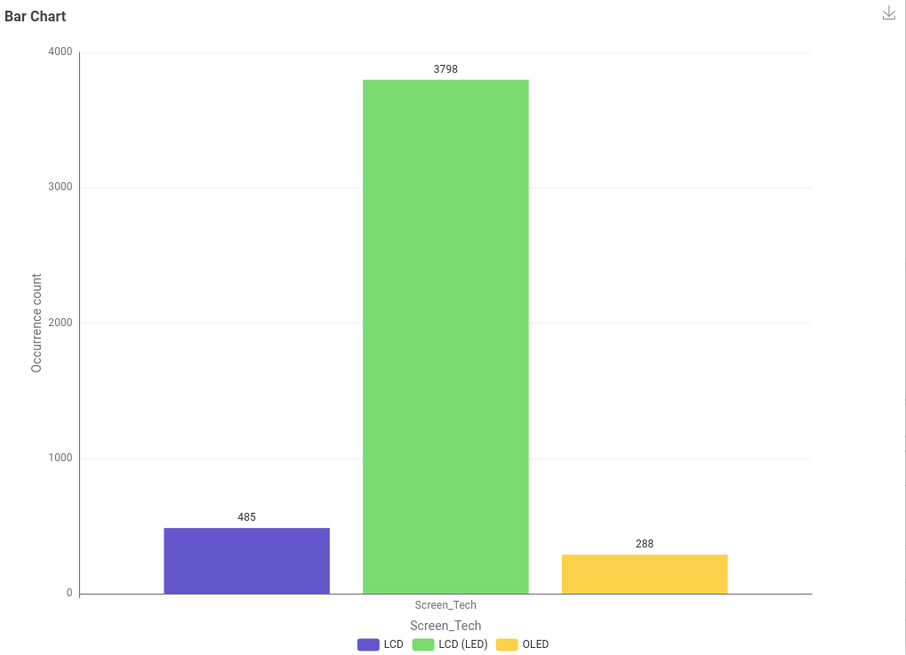
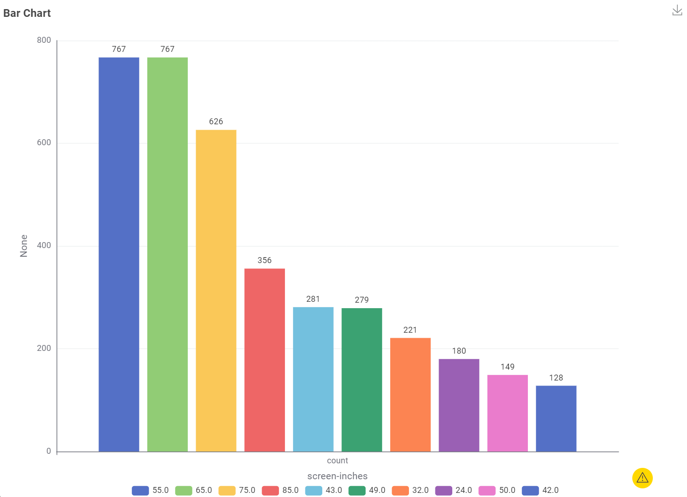
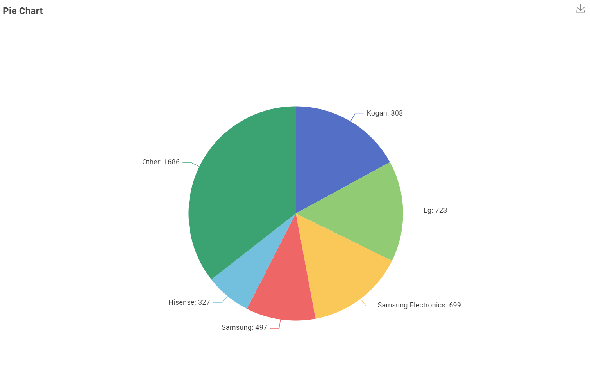
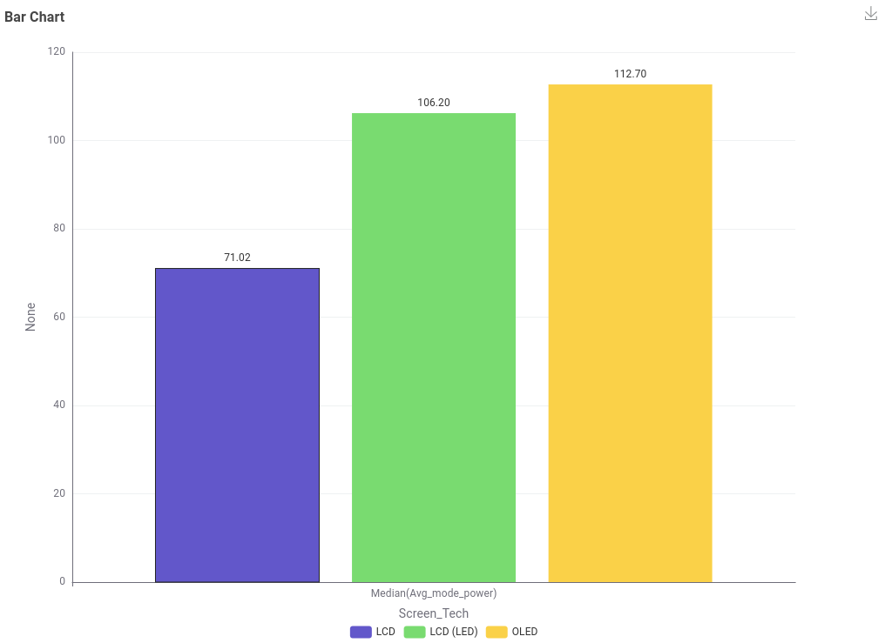
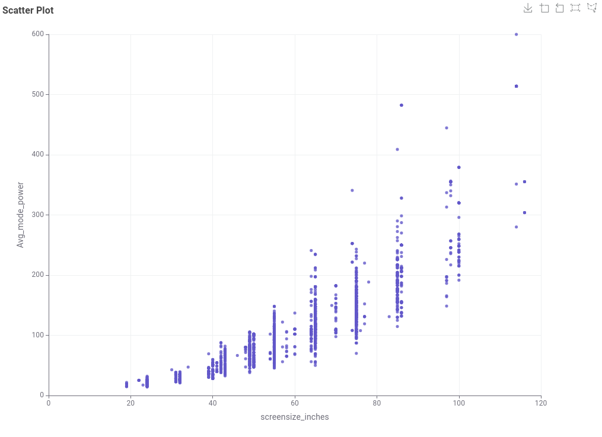
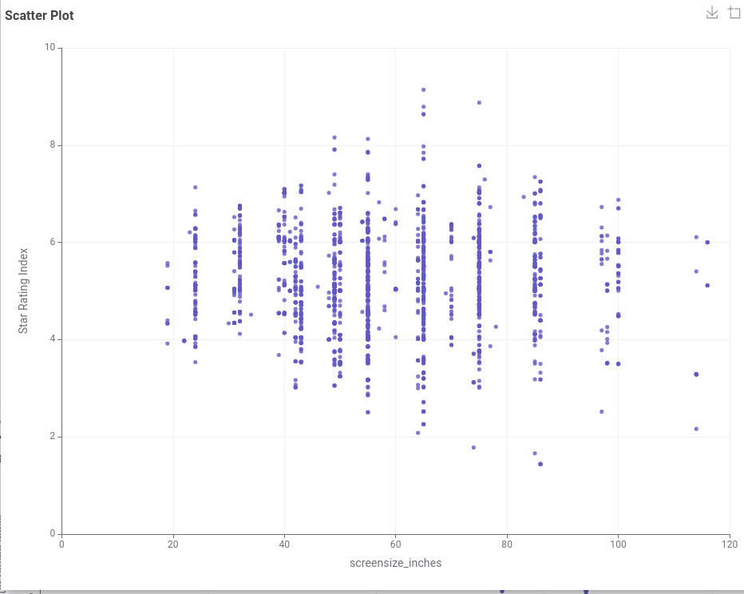
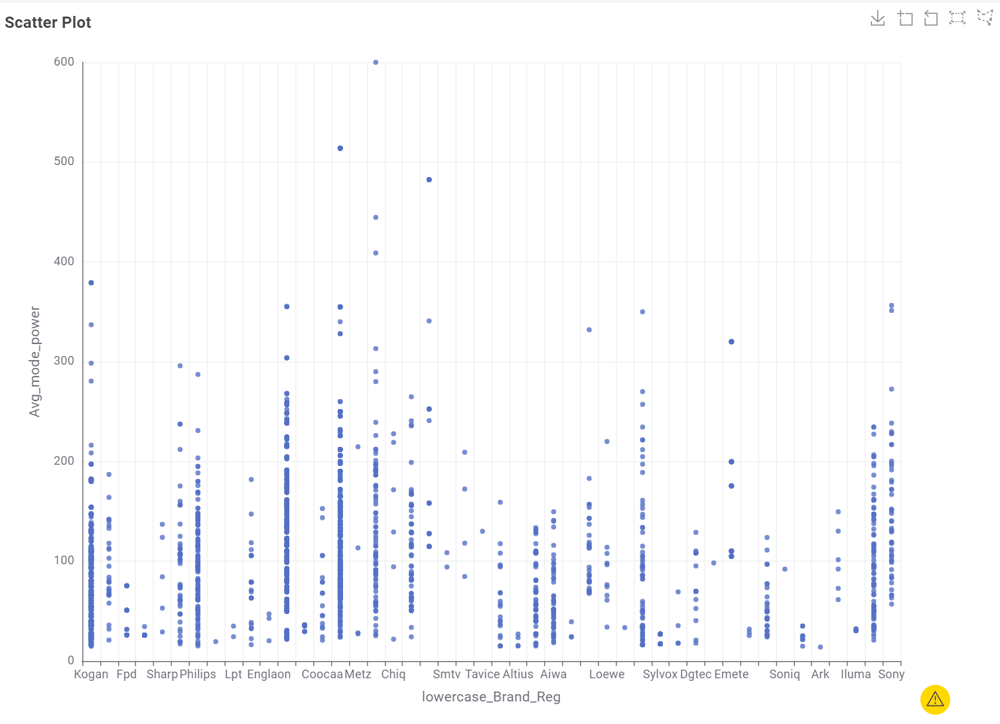

32″–43″
~205 kWh/yearTypical annual use
TELEVISION EXPLORER
A snapshot of registered television models available in the Australian market. Bigger screens can bring bigger energy demands—compare before you commit.
A QUICK READ
~205 kWh/yearTypical annual use
~360 kWh/yearTypical annual use
~680 kWh/yearTypical annual use
How to read this: figures are median "Labelled energy consumption (kWh/year)" values for models in each size band, from the supplied Australian registration data. Actual use varies by model, picture settings and hours watched.
A BETTER QUESTION
Multiply the annual kWh on an Energy Rating Label by your electricity tariff to estimate yearly running cost. At 30 cents per kWh, a typical 360 kWh Popular-size television costs about $108.00 per year.
Explore our methodTHE DATA STORY
We pulled apart the Australian television registration dataset to see what actually drives energy use. Tap a question to see the chart behind the answer.

LCD (LED) dominates the market. It accounts for 3,798 of the registered models, dwarfing standard LCD (485) and OLED (288). Older LCD backlighting has largely been replaced by LED backlighting, while OLED remains a smaller, premium category.

55″ and 65″ are the sweet spot. Both sizes register 767 models each, ahead of 75″ (626), 85″ (356) and the more compact 43″ (281). These mid-to-large sizes represent the current mainstream of the Australian market.

Kogan carries the widest model range, with 808 distinct models — 17.05% of the market — ahead of LG (723) and Hisense (327). Samsung's slice is the largest by total registrations (1,196), but Kogan lists more different models than any single competitor, with a long tail of smaller brands making up the remaining "Other" share of 1,686 models.

LCD is the most power-efficient screen technology, with a median mode power of 71.02 W. LCD (LED) sits in the middle at 106.20 W, while OLED draws the most at 112.70 W — the trade-off for its deeper contrast and richer colour.

Bigger screens use more power. The scatter plot shows a clear upward trend — as screen size climbs from around 20″ to 115″, average mode power climbs with it, from under 50 W up to several hundred watts. Screen size is the single strongest driver of energy use in the dataset.

No clear relationship. Star ratings are scattered fairly evenly across every screen size, from 20″ to 115″. A bigger TV doesn't systematically score higher or lower — efficiency rating depends far more on the individual model's technology and engineering than on its size.

Brand isn't a reliable signal for power use. Every major brand — Samsung, LG, TCL, Hisense, Kogan and the rest — shows the same wide spread of power draw, from very low to very high. Power consumption tracks screen size and technology, not who made the television.